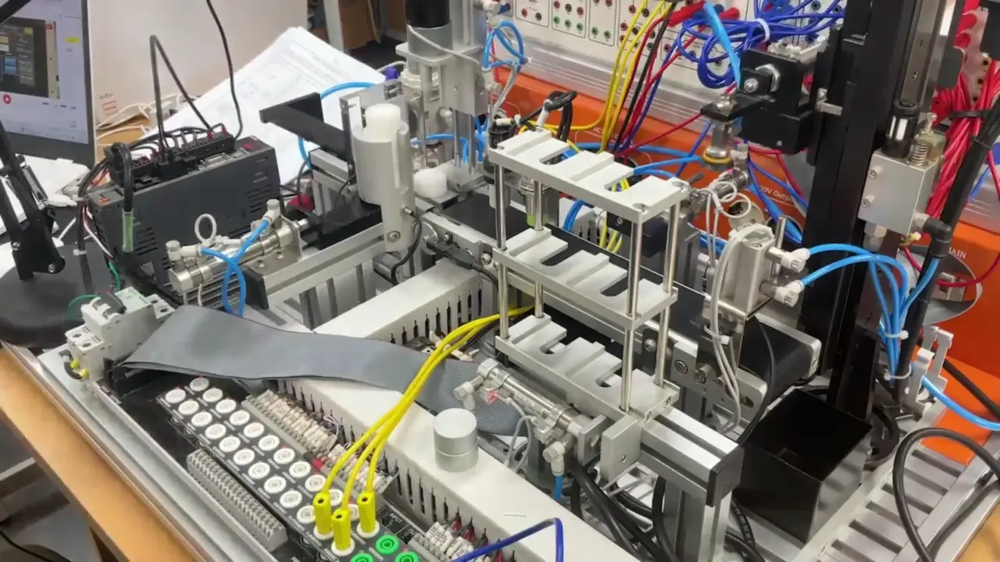
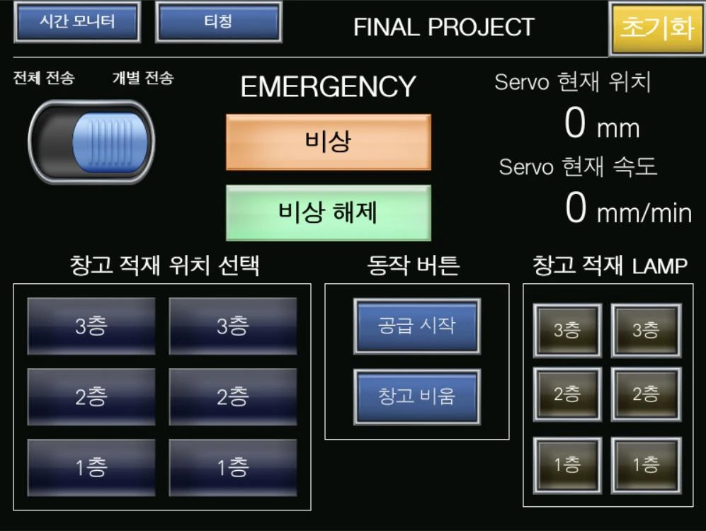
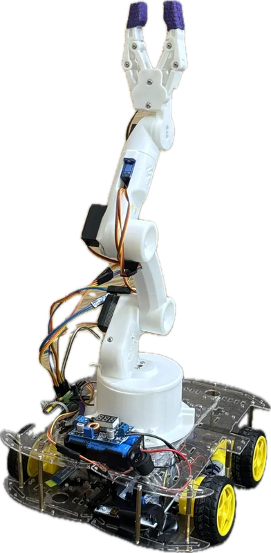

ENGINEERING RECORD / 2026제어엔지니어 지원
PLC · AUTOMATION · CONTROL
PLC 제어
이종현.
시퀀스를 설계하고, 장비에서 확인합니다.
직접 구현한 공정과 개선 과정을 소개합니다.
Mitsubishi PLC / GX Works2 / HMI
01 / PLC DEMONSTRATION01:19

실제 장비 시연 / PLC 프로젝트 PPT 4쪽전체 공급 · 창고 비움 · 개별 공급의 동작을 확인할 수 있습니다.웹에서 시연 영상 보기 ↗총 동작시간 단축11.8%
173.3 → 152.8초Teaching 위치 조정 + 병렬 동작
전체 공급·창고 비움 시간 합계
02측정 기반 개선동작시간 비교와 레지스터 오류 추적
03장비 연동·시험센서·모터·AMR 주행과 도킹
01 / PLC PROCESS CONTROL프로젝트 1 / 2
식품 자동 분류·적재
PLC 시퀀스 & HMI
2026.06
2인 공동 프로젝트
Mitsubishi PLC 기반 식품 자동 분류 및 창고 관리 시스템.
센서 판정에 따라 제품을 분기하고, 운전 모드와 적재 상태를 HMI로 연결했습니다.
INPUT제품 공급
→INSPECTION금속 검출
→SORTING정상 제품 분류
→STORAGE6개 구역 적재
금속 검출 제품 → 배출 실린더로 불량 분리 · 포장 구역 만재 → 끝단 저장 창고로 이송
직접 참여한 제어·운전 기능
- 시퀀스
- 좌·우 1~3층 적재, 저장 창고 이송·비움 동작을 Ladder로 공동 구현했습니다.
- HMI
- 전체·개별 공급 모드, 적재 위치 선택과 상태 램프를 구성했습니다.
- 정지·복귀
- 실습 장비에서 비상 버튼 입력 시 흡착을 유지하고 동작을 정지한 뒤, 해제 후 중단 지점부터 이어가도록 구현했습니다.
- 셋업
- 조그 운전으로 복귀 위치를 Teaching하고 ROM에 저장해 전원 종료 후에도 값을 유지했습니다.

프로젝트 HMI 화면 · 공동 개발 결과물직무 연결설비의 입력 조건, 동작 순서와 운전 화면을 함께 확인하며 공정 제어를 구현한 경험입니다.
01 / MEASURE → IMPROVE → VERIFY프로젝트 2 / 2
동작시간 173.3 → 152.8초
측정으로 찾은 개선 지점
−20.5초기준 대비 총 동작시간 11.8% 단축
전체 공급 + 창고 비움 · 단위: 초발표자료의 비교 측정값 기준. 동일 조건의 반복 횟수와 편차는 별도로 기록되지 않았습니다.
두 단계의 공정 개선
01Teaching 위치 최적화 −18.0초
중간 복귀 위치를 60~140 mm 범위에서 20 mm씩 바꾸며 TTMR로 시간을 측정했습니다. 비교한 위치 중 140 mm에서 가장 짧았습니다.
02공급 동작 병렬화 −2.5초
분배 후 다음 소재를 바로 공급하도록 순서를 조정했습니다. 마지막 소재 처리 시 ‘소재 없음’ 대기에 머무르지 않도록 조건도 보완했습니다.
TROUBLESHOOTINGTTMR 저장값 이상 → 주소 충돌 추적
D3000 계측 시 TTMR이 내부적으로 사용하는 D3001에 합계를 저장해 충돌했습니다. 사용 주소를 대조한 뒤 합계 저장 영역을 분리했습니다.
개선의 근거(173.3 − 152.8) ÷ 173.3 × 100 = 11.8%. 병렬화의 추가 개선은 직전 단계 대비 약 1.6%입니다.
02 / EMBEDDED CONTROL · 차팔이프로젝트 1 / 1
STM32 주행 제어
IMU 보정 & PID 피드백
2026.07 – 08
주행 제어·차량 하드웨어 공동 담당
STM32 기반 물품 회수·운반 로봇.
IMU를 이용해 직진·후진 시 좌우 쏠림을 보정했습니다.
MPU6050 / I2CBias 보정 · 필터 · Deadband상대 Yaw 오차 → PID좌·우 PWM → DC 모터
- 센서 셋업
- 정지 상태에서 약 3초간 자이로를 측정해 Bias를 보정하고, 작은 노이즈를 제어 입력에서 제외했습니다.
- 제어 튜닝
- 약 20 ms 주기로 센서값·PID 연산·좌우 출력을 확인하며 실차 시험을 반복했습니다.
- 운전 조건
- UART 기반 Bluetooth 명령을 처리하고, 정지 명령과 유효 명령 단절 시 정지를 우선하도록 구성했습니다.
상대 Yaw 기반 제어로 장시간 드리프트가 남습니다. 센서 정지 보정값과 실제 직진 궤적 오차는 구분합니다.

팀 제작 시제품
개인 담당: 차량 하드웨어·IMU 기반 주행 제어03 / SUPPORTING EXPERIENCE · 7s_FA프로젝트 1 / 1
스마트팩토리
이동로봇·설비 연동 경험
개발 진행 중
2026.09 – 현재
최종 프로젝트 · ROS 2 기반 스마트팩토리.
자재·완제품 운반을 목표로 하는 팀 프로젝트에서 이동로봇의 주행과 작업 위치 도킹을 담당합니다.
PLC 직무와 연결되는 경험
- 환경 셋업
- 작업 환경의 지도를 작성하고, 로봇별 통신·센서·주행 설정을 구성했습니다.
- 동작 연결
- 목적지 이동 → 위치·방향 정렬 → 센서 기반 도킹으로 이어지는 동작 순서를 구성했습니다.
- 완료 확인
- 명령 전달과 실제 완료를 구분하고, IR 감지와 정지 상태를 확인해 작업 위치 도착을 판정했습니다.
- 실물 시험
- Burger2의 조립대 이동·대기장소 진입·주차 도킹 동작을 확인하고, 실패 시 입력·명령·실제 움직임을 비교했습니다.
주행 제어 일부 공동 개발. 개별 동작 검증과 두 로봇·로봇팔의 연속 공정 통합은 구분하며, 전체 공정 연동은 진행 중입니다.
TEAM SYSTEM / 전체 목표 구성운반로봇이동 · 정렬 · 도킹개인 담당 영역
02제작·조립 공정로봇팔 · 리니어 · 팔레트
후속 통합·확장완제품 운반 → 창고 적재
팀 전체 목표를 요약한 구성도입니다. 로봇팔·리니어 제어는 팀 협업 범위입니다.
직무 연결여러 장비가 연결된 공정에서 작업 순서·완료 조건·센서 상태를 함께 확인하는 제어 관점을 익혔습니다.
04 / SENSOR & ACTUATOR · POCO프로젝트 1 / 1
POCO
센서 기반 모니터암 제어
2026.05 – 09
1·2차 연속 개발 · 4인 팀
제24회 임베디드SW경진대회 자유공모 부문 결선 진출
자세를 분석하고 사용자의 위치에 맞춰 모니터 환경을 조절하는 온디바이스 시스템입니다.
개인 담당
- 수평 제어
- IMU의 기울기 정보를 이용해 PID 기반 모니터암 수평 유지 제어를 구현했습니다.
- AI 데이터
- 1차 Face 특징 추출·GRU·TFLite 개발에 이어, 2차에서 EOG 신호와 영상 프레임을 연결한 눈 깜빡임 라벨링·데이터셋을 구성했습니다.
22 / 22팀 모니터암 동적 추종 시험 성공
발표자료 기준 · 20초 내 정착 조건
위 수치는 팀 통합 결과입니다. 졸음 모델은 개선 중이며 최종 통합 시연에서는 Face 기능이 비활성화되었습니다.
제어 경험의 확장영상·센서 정보를 실제 구동으로 연결하고, 모델 평가와 하드웨어 통합 결과를 나누어 확인했습니다.
PROFILE / NEXT STEP제어엔지니어 지원
- 학력
- 강남대학교 ICT융합공학부 소프트웨어 전공
2026.02 졸업 - 교육
- 대한상공회의소 서울기술교육센터
AI융합 로봇 SW개발자 과정
2026.04.14 – 2026.11.09 수료 예정 - 어학·자격
- OPIc IH · 2026.09
2종 보통 운전면허 - 활동
- 제24회 임베디드SW경진대회
자유공모 부문 결선 진출 · POCO
COREPLC · 설비 제어
Mitsubishi PLC · GX Works2
Ladder · HMI · Teaching · TTMR
CONNECTED센서 · 로봇 연동
STM32 · I2C · UART · PWM · PID
ROS 2 · Nav2 · ArUco · IR
GROWTH입사 후 학습 방향
현장 I/O·인터록·제어 표준
설치·셋업·시운전 절차 · Siemens PLC